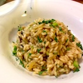

<select id="page_switch" class="bb_drop2" style="border: 1px solid #0b7eb5;">
  <option selected value="test/sample_website/Bleach/chapters/1/broken.html">1</option>
  <option  value="test/sample_website/Bleach/chapters/1/2.html">2</option></select> of <strong>2</strong>

<div id="imgholder">
  <a href="2.html">
    
  </a>
</div>
